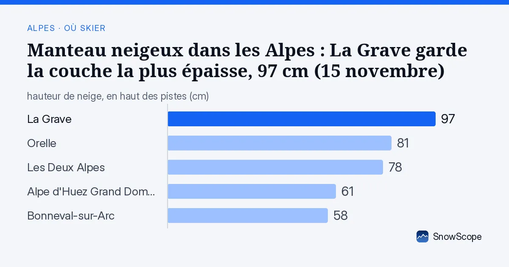

Manteau neigeux dans les Alpes : La Grave garde la couche la plus épaisse, 97 cm (15 novembre)
La Grave garde le manteau le plus épais des Alpes aujourd'hui : 97 cm en versants supérieurs. Le manteau de début d'hiver est fragmenté—l'altitude compte bien plus que les vallées—et la couverture décroît déjà. Dans la région, 851 des 1 178 domaines skiables ont de la neige, répartie sur 63 570 km² de terrain blanc.
Consultez les prévisions neige en temps réel pour La Grave sur l'application SnowScopeHauteurs de neige, alertes poudreuse et carte 3D, gratuitement.
Trois domaines, trois profils
La Grave domine avec 97 cm en versants supérieurs. La neige de La Grave s'accumule le plus au sommet (3 543 m) et à mi-montagne (3 369 m), où l'épaisseur atteint 83 cm aux deux niveaux. En descendant à la station (3 196 m), on trouve toujours 76 cm. Cette régularité sur les altitudes est inhabituelle si tôt en saison.
Orelle arrive en deuxième position, 16 cm derrière La Grave, avec 81 cm en altitude. Son profil est plus raide : le sommet (3 221 m) reçoit 55 cm, mais à mi-montagne (2 779 m) l'épaisseur tombe à 28 cm. À la station (2 338 m), on ne trouve que 7 cm.
Les Deux Alpes raconte une histoire différente. Les versants supérieurs conservent 78 cm, presque autant qu'Orelle, mais le dénivelé est énorme. Au sommet (3 511 m) vous avez 83 cm. À mi-montagne (2 397 m) on tombe à seulement 11 cm. La station, à 1 284 m, affiche 0 cm—rocher et herbe à nu.
| Station | Hauteur de neige | Neige fraîche, 72 h | Attendu, jours suivants | Sommet |
|---|---|---|---|---|
| La Grave | 97 cm | 41 cm | 65 cm | 3 543 m |
| Orelle | 81 cm | 27 cm | 77 cm | 3 221 m |
| Les Deux Alpes | 78 cm | 38 cm | 51 cm | 3 511 m |
| Alpe d'Huez Grand Domaine | 61 cm | 37 cm | 54 cm | 3 306 m |
| Bonneval-sur-Arc | 58 cm | 12 cm | 55 cm | 2 948 m |

La neige disparaît des Alpes basses
Il y a deux jours, le 13 novembre, 75 850 km² des Alpes étaient blancs. Aujourd'hui, 15 novembre, il ne reste que 63 570 km² enneigés. C'est une perte de plus de 12 000 km² en 48 heures. Le 18 novembre, les prévisions suggèrent que seuls 59 240 km² garderont leur couverture.
Ce recul rapide est normal en novembre : le soleil faible en vallée, la neige de basse altitude fond en premier, et les hauteurs conservent leur manteau plus longtemps. C'est pourquoi les skieurs de début de saison restent sur le tiers supérieur de chaque montagne.
Ce que les balises nivométriques montrent
Les véritables piquets de neige racontent une histoire plus large. Le 13 novembre, la station du Weißseespitze à 3 499 m a mesuré 264 cm—bien plus profond que les versants supérieurs de n'importe quel domaine skiable. À cette altitude, les montagnes accumulent un vrai manteau neigeux, pas la fine couche du début de saison.
La station du Sonnblick à 3 109 m a indiqué 55 cm le 13 novembre, avec 23 cm de neige nouvelle en 24 heures. Cette neige fraîche est tombée quand La Grave, Orelle et Les Deux Alpes recevaient leurs apports les plus importants. Gandegg, plus bas à 2 710 m, ne conservait que 41 cm à la même date.
Les balises mesurent un seul point un seul jour. Les domaines publient des moyennes sur de larges secteurs. Ni l'une ni l'autre ne raconte l'histoire complète seule, mais ensemble elles montrent que les hauteurs consolidisent la neige tandis que les basses altitudes se dégarnissent.
Où se classe cette semaine par rapport au passé
La Grave à mi-montagne (3 369 m) conserve seulement 18 cm aujourd'hui. La moyenne climatique pour cette date est 70 cm. Seulement 7 des 46 hivers passés ont été plus maigres le 15 novembre. C'est un démarrage lent.
Orelle à mi-montagne (2 779 m) affiche 19 cm contre les habituels 50 cm pour cette date. Seulement 10 hivers passés ont connu cette maigreur. Les Deux Alpes à 2 397 m montre 7 cm aujourd'hui, bien au-dessous des typiques 26 cm—un manque que seulement 10 des 46 hivers passés ont expérimenté. La neige de début novembre est clairsemée partout, mais cette saison reste en retrait par rapport à la moyenne.
Ce qui arrive
De la neige fraîche est annoncée pour les trois prochains jours. La Grave gagnera 65 cm d'ici le 18 novembre. Orelle pourrait en recevoir 77 cm. Les Deux Alpes et Bonneval-sur-Arc en accumuleront 55 cm et 51 cm respectivement. Cela épaissira sensiblement le manteau en altitude.
Surveillez le niveau de congélation. Le 16 novembre à La Grave il oscille entre 2 610 m et 3 210 m—une plage large qui suggère une instabilité. De la neige mouillée est probable en dessous de 2 700 m ; au-dessus, la neige restera sèche et se soudra bien. Les 17 et 18 novembre la bande se resserre et le froid stabilise le manteau.
Conseils aux skieurs
- Versants hauts seulement : le 15 novembre, les épaisseurs de mi-montagne représentent la moitié de ce que les versants supérieurs conservent. Restez au-dessus de 3 000 m pour l'instant.
- Les rochers se cachent sous une neige fine aux basses altitudes. Skiez des pistes damées tant que la neige de novembre ne se consolide pas ; attendez-vous à des aléas hors-piste.
- Les pentes exposées au sud fondent le plus vite. Si vous avez le choix, privilégiez les versants nord ou les ravins ombragés.
- Les prévisions sont bonnes jusqu'au 18 novembre mais peuvent changer ; consultez la carte SnowScope à nouveau 24 heures avant de voyager.
- Avant toute sortie hors-piste ou de randonnée, lisez le bulletin BERA avalanche officiel de Météo-France. Le danger d'avalanche est de niveau 2 aujourd'hui, mais la neige fraîche changera cela.
À propos de ces chiffres
Les hauteurs de neige des stations sont la neige la plus épaisse sur le haut du domaine à la date indiquée ; ce sont des estimations pour une zone, pas une mesure en un point. Les prévisions peuvent changer. Consultez toujours le bulletin d'avalanche officiel avant le hors-piste.
Bulletins d'avalanche officiels: Météo-France BERA
Citer ce bulletin
Pour la recherche, l'enseignement ou la presse : chiffres et graphiques réutilisables librement sous CC BY 4.0 avec cette citation.
SnowScope (2026), Manteau neigeux dans les Alpes : La Grave garde la couche la plus épaisse, 97 cm (15 novembre), https://snowscope.app/blog/fr/2026/11/alps-la-grave-snow-depth-today-15-november-2026.html, consulté le 2026-11-15
SnowScope (Atlas Labs). (2026, November 15). Manteau neigeux dans les Alpes : La Grave garde la couche la plus épaisse, 97 cm (15 novembre). SnowScope snow reports. https://snowscope.app/blog/fr/2026/11/alps-la-grave-snow-depth-today-15-november-2026.html
BibTeX
@misc{snowscope2026alpslagravesnowdepthtoda,
author = {{SnowScope (Atlas Labs)}},
title = {Manteau neigeux dans les Alpes : La Grave garde la couche la plus épaisse, 97 cm (15 novembre)},
year = {2026},
month = nov,
howpublished = {\url{https://snowscope.app/blog/fr/2026/11/alps-la-grave-snow-depth-today-15-november-2026.html}},
note = {Published 2026-11-15 20:24 UTC; accessed 2026-11-15}
}· CC BY 4.0 · Méthodes, données et outils →
La Grave : neige et température selon l'altitude, cet hiver vs l'hiver dernier (outils) →
Suivre La Grave
Gratuit : un message quand la neige arrive, et la météo chaque matin.
Autres bulletins neige

Bonneval-sur-Arc affiche 52 cm en altitude le 8 novembre. Les semaines 10-11 correspondent à la pointe de la saison neigeuse. Découvrez ce qu'il faut emporter selon les prévisions.

Les 2 Alpes culmine à 3 511 m pour de la neige abondante en décembre 2026, avec un forfait adulte 6 jours à 266,50 EUR.